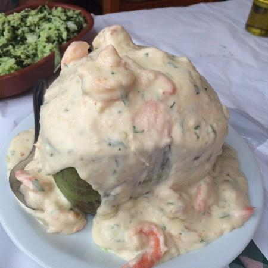

Camarão no Coco

Camarão no Coco
Camarão no coco verde, com molho bechamel, requeijão e parmesão: uma refeição magnífica que nem precisa de complemento!
Ingredientes:
- 2 colheres (sopa) de manteiga
- 1/2 cebola picada
- 2 dentes de alho amassados com sal
- 1 pitada de pimenta do reino
- 1 pitada de noz moscada
- 400 g de camarão limpo
- 100 ml de leite de coco
- 1 caixa de creme de leite
- coentro picado a gosto
Modo de preparo
- Em uma panela, de preferência de barro, despeje a manteiga e deixe derreter.
- Coloque a cebola picada, o alho amassado com sal e deixe dourar, depois adicione uma pitada de pimenta do reino e de noz moscada.
- Abaixe o fogo, acrescente o camarão e misture, depois adicione o leite de coco e mexa até começar a ferver.
- Adicione o creme de leite e o coentro, misture para encorporar a receita e está pronto.